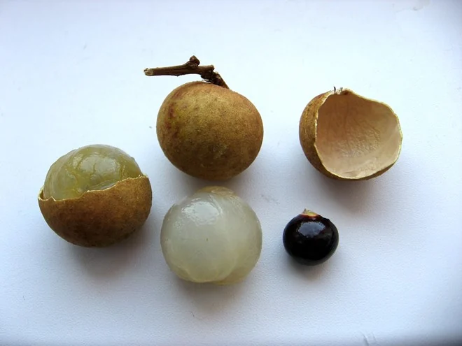
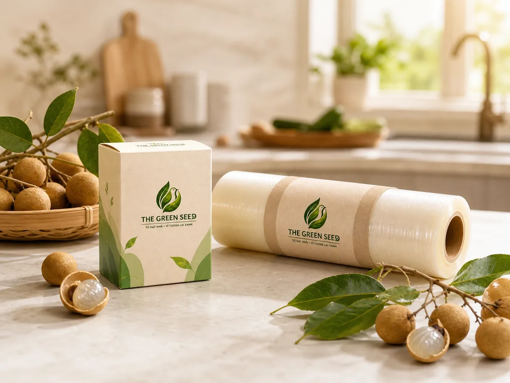
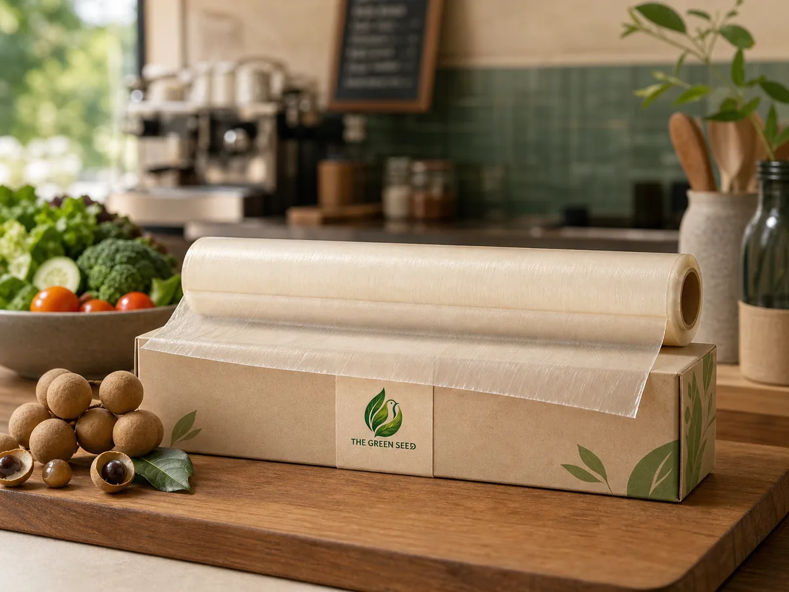
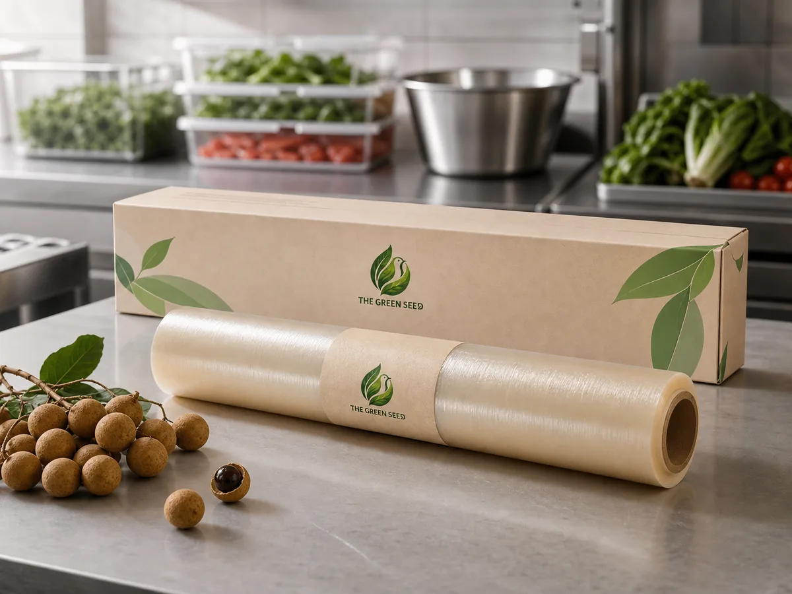

3,1 triệu tấn
Chất thải nhựa trên đất liền
Ước tính lượng chất thải nhựa được thải ra trên đất liền tại Việt Nam mỗi năm.
Màng bọc thực phẩm sinh học từ hạt nhãn
The Green Seed phát triển mẫu màng bọc thực phẩm từ phụ phẩm hạt nhãn, hướng tới giảm phụ thuộc vào nhựa dùng một lần và tạo thêm giá trị cho nông nghiệp Việt Nam.
Sản phẩm mẫu đã được phát triển. Các đặc tính đang tiếp tục được hoàn thiện và kiểm nghiệm.

Bài toán cần thay đổi
Rác thải nhựa dùng một lần đang gây áp lực lên hệ thống thu gom, tái chế và môi trường nước. The Green Seed bắt đầu từ một câu hỏi: liệu một phụ phẩm nông nghiệp quen thuộc có thể trở thành một phần của giải pháp vật liệu mới?
Ước tính lượng chất thải nhựa được thải ra trên đất liền tại Việt Nam mỗi năm.
Tỷ lệ theo số vật phẩm nhựa được ghi nhận trong khảo sát của World Bank.
Đây không phải tỷ lệ theo khối lượng của toàn bộ rác nhựa Việt Nam.
Xem nguồn dữ liệuTỷ lệ chất thải nhựa quản lý chưa tốt được ước tính đi vào đường thủy hoặc đại dương.
Nguồn nguyên liệu bị bỏ quên
Hạt nhãn chiếm một phần đáng kể khối lượng quả trong các nghiên cứu đã công bố, nhưng thường không phải phần được sử dụng làm thực phẩm. Nhóm đang nghiên cứu cách khai thác nguồn nguyên liệu này để phát triển mẫu màng bọc sinh học.

110.000 tấn × 11,8–17%. Tỷ lệ hạt thay đổi theo giống, vùng trồng và độ trưởng thành.

Giải pháp The Green Seed
Mẫu màng được phát triển từ phụ phẩm hạt nhãn kết hợp hệ vật liệu sinh học và chất hỗ trợ tạo màng. Website chỉ công khai nguyên lý tổng quát, không công bố toàn bộ công thức.
Thu gom và sơ chế hạt nhãn sau chế biến.
Sấy khô, nghiền mịn và chuẩn hóa nguyên liệu đầu vào.
Phối trộn hệ vật liệu, tạo màng và tối ưu đặc tính sử dụng.
Tín hiệu từ thị trường
The Green Seed lựa chọn công khai trạng thái mẫu thử, nguồn dữ liệu và phạm vi của từng tuyên bố, thay vì biến định hướng nghiên cứu thành lời hứa đã được chứng minh.
54% người tham gia khảo sát tại Việt Nam cho biết sẵn sàng trả cao hơn tối đa 10% cho sản phẩm làm từ vật liệu tái chế hoặc bền vững. Kết quả khảo sát không đại diện cho quyết định mua của toàn bộ người Việt.
Xem khảo sátHạn chế sản xuất, nhập khẩu một số túi ni lông khó phân hủy dưới kích thước và độ dày quy định, có ngoại lệ.
Lộ trình hướng tới dừng sản xuất, nhập khẩu phần lớn sản phẩm nhựa dùng một lần và bao bì khó phân hủy, theo các ngoại lệ của quy định.
Dòng sản phẩm
Mức giá hiện tại là dự kiến và có thể thay đổi sau giai đoạn kiểm nghiệm, hoàn thiện bao bì và sản xuất thử.



Giá trị đang hướng tới
The Green Seed được định hướng theo mô hình kinh tế tuần hoàn, kết nối người dùng, doanh nghiệp F&B và nguồn phụ phẩm nông nghiệp.
Phát triển thêm một lựa chọn vật liệu để tiếp tục thử nghiệm thay thế màng PE/PVC.
Biến phụ phẩm bị bỏ đi thành nguyên liệu có giá trị.
Khảo sát khả năng hình thành thêm đầu ra cho phụ phẩm từ chuỗi nhãn.
Nghiên cứu hướng tái sử dụng phần bã sau xử lý để hạn chế phát sinh chất thải.
Câu chuyện thương hiệu
The Green Seed xuất phát từ câu hỏi rất đơn giản: liệu phần hạt nhãn thường bị bỏ đi có thể trở thành một vật liệu hữu ích hơn không?
Từ câu hỏi đó, nhóm sinh viên Trường Đại học Công Thương TP.HCM theo đuổi hành trình phát triển một mẫu màng bọc có nguồn gốc sinh học và kiểm nghiệm các yêu cầu sử dụng cần thiết.
Đọc câu chuyện thương hiệuDùng rác để thay thế rác.
Biến phụ phẩm thành giải pháp xanh cho đời sống hằng ngày.
Câu hỏi thường gặp
Cùng thử nghiệm tương lai xanh
Đăng ký quan tâm để nhận cập nhật về quá trình hoàn thiện sản phẩm, chương trình dùng thử và cơ hội hợp tác.